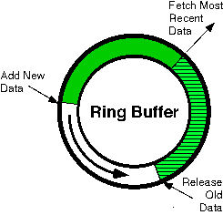

This document describes the structure of the ring buffer in the V2.x RBNB
system.
Dynamic Ring Buffers link data source sources with the balance of the RBNB environment. Their critical "ring buffering" function enables downstream monitors to request contiguous segments of historical or "most recent" data for applications that require more than single-point "current value tables". This is shown in Figure 1.

Figure 1. The Ring Buffer
The Ring Buffers can be configured to provide a combination of RAM memory for high-speed gapless access to a specified amount of most-recent data (termed the "Cache"), plus slower disk memory for playback of historical data (termed the "Archive"). In addition, the Ring Buffers can function as the primary long-term data storage mechanism simply by configuring an appropriately large disk file.
The Archive overlaps, rather than appends to, the Cache, providing additional storage for Frames that are not in memory.
The implementation of the Ring Buffer entails additional objects, termed
"FrameSets" and "FileSets". These objects, while not directly visible to
the source application, determine the details of how the Ring Buffer is trimmed
and the structure of the Archive disk directory hierarchy. The source application
programmer often need not be concerned with these additional objects, but
an understanding of them may be helpful.
The Ring Buffer acts as a continuous ring from which old data is removed to make way for newer data. Data is sent to the RBNB server in the form of Frames - created when a Channel Map is flushed by the application to a simple API Source. The Ring Buffer consists of a hierarchy of objects, as shown in Figure 2.
Ring Buffer
Cache
FrameSets
ArchiveFrames
FileSets
FrameSets
Frames
The simple API allows the source application
to specify how many Frames should be stored in the Cache and Archive. However,
because the simple API does not allow the application to specify the number
of FrameSets in the Cache or FileSets in the Archive, the actual number of
Frames stored may exceed the desired value.
The Cache consists of one or more FrameSets, each of which comprises one or more Frames. The Cache is a ring of slots for FrameSets. When a new FrameSet is added to the Cache, it is placed into a slot, replacing any previous FrameSet occupying that slot A FrameSet is a list of slots for Frames. When Frame is added to the FrameSet, it may fill up the last empty slot. At that time, the FrameSet is closed and a new FrameSet is created. Frames are always added to the newest FrameSet.
Thus the Cache has a granularity of FrameSets,
rather than Frames. The simple API allows the source application to set the
number of Frames, but not the number of FrameSets, stored in the Cache.However,
when the Cache is full, entire FrameSets are removed. This can result in
a significant decrease in the number of Frames in the Cache whenever a FrameSet
is filled up.
Once a FrameSet is closed, it cannot be
reopened to add new Frames. This is true even if the FrameSet was closed
because the source application shut down the Ring Buffer.
FiFS = ceiling(FiC / FSiC)
FSiFlS = ceiling(FiA / FiFS) / FlSiA